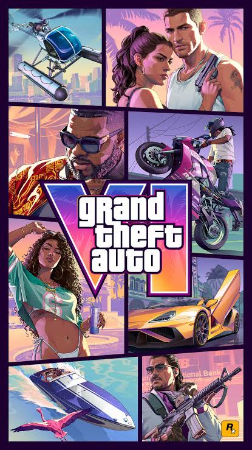
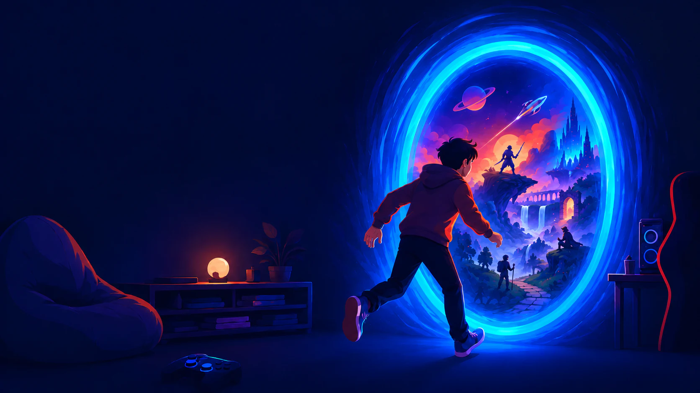
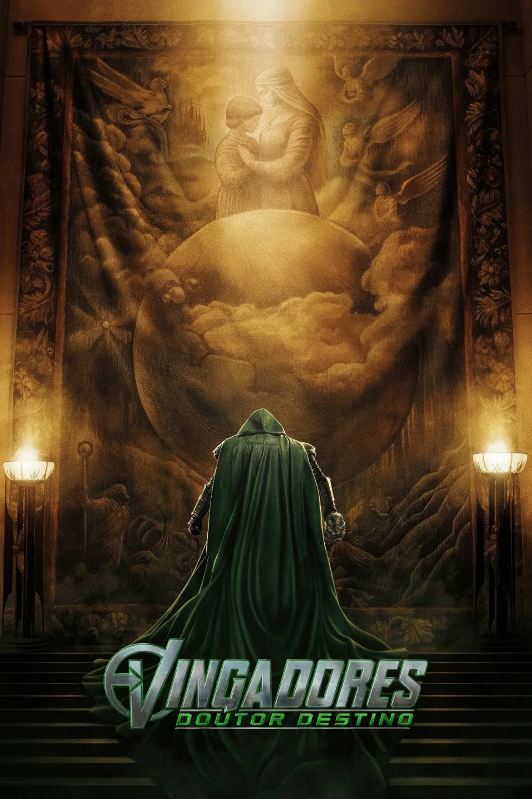
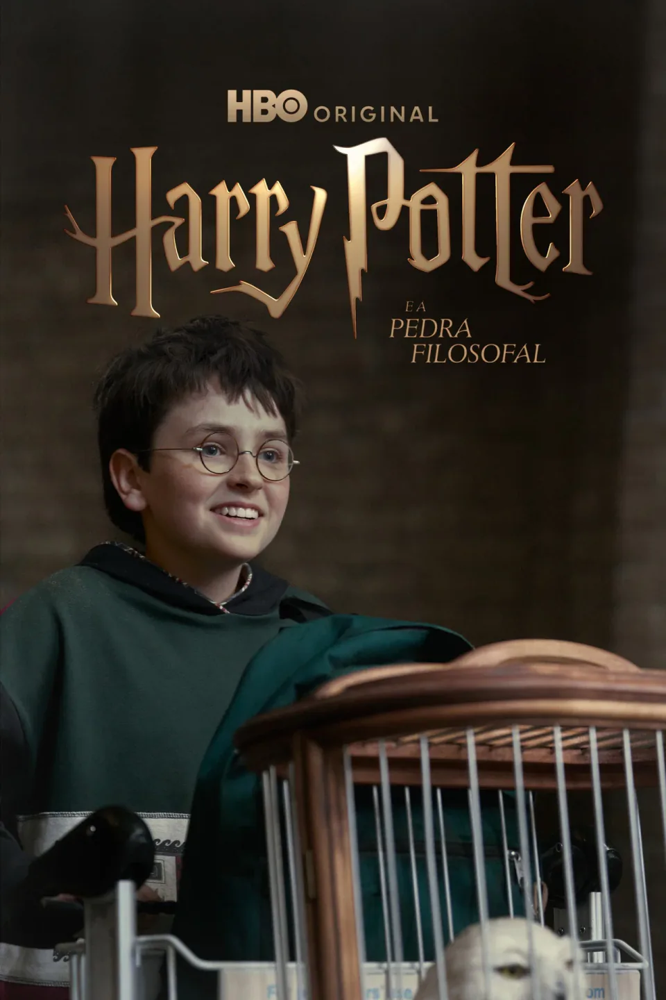
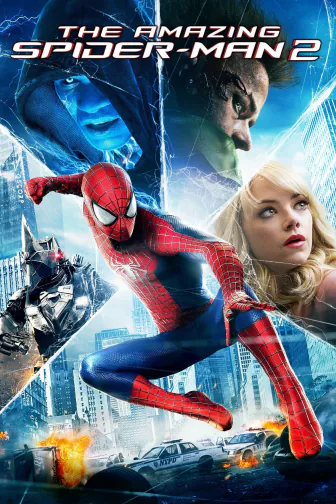
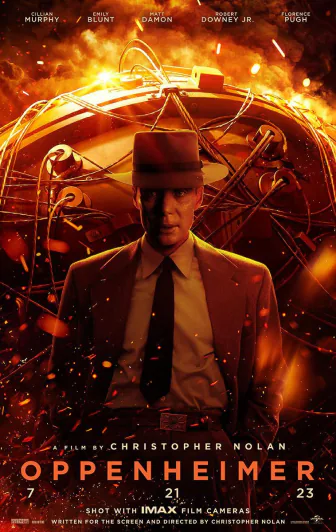
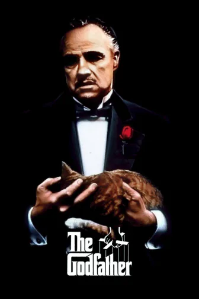
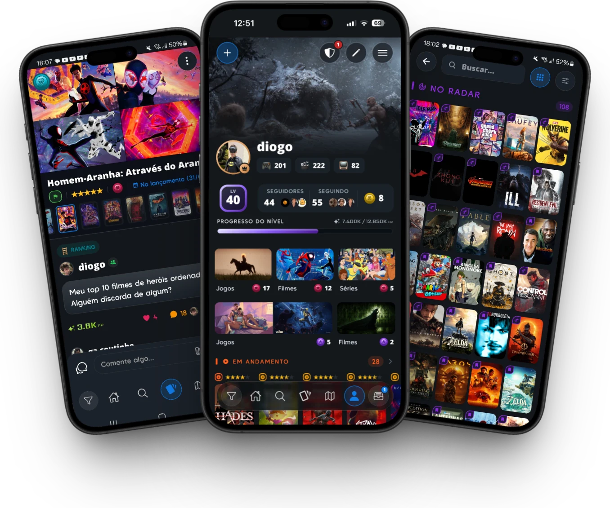

Grand Theft Auto VI
Jogo
A anunciar
Dê vida à sua coleção de jogos, séries e filmes. Compartilhe o que viveu e descubra qual história vem depois.

Jogos, séries e filmes ocupam suas noites, seus fins de semana e metade das suas conversas. E nunca tiveram um lugar próprio.
Não é uma lista. É a estante da sua história. Cada jogo zerado, cada série maratonada e cada filme que te marcou tem lugar, status e voz aqui.
Teoria, ranking, desabafo, opinião impopular. No Unwind cada história vira conversa.



Ganhe UP, suba de nível e desbloqueie novas possibilidades no app. Resgate as recompensas das missões para experimentar.
Novos níveis. Novas possibilidades.
Comente em uma publicação da comunidade.
Dê sua nota e ajude outras pessoas a encontrar a próxima história.
Marque como concluídos os jogos, filmes e séries que você terminou.
Receba um Reconhecimento da comunidade.
Reúna suas mídias em coleções que têm a sua cara.
Ganhe um novo seguidor para acompanhar suas histórias.
Receba um diamante pelo que você compartilha.
A pior parte de terminar uma história é não saber qual vem depois. No Unwind a resposta vem de quem já viveu.

Salvo no radar
Salvo no radar Salvo no radar
Salvo no radar
 Salvo no radar
Salvo no radar

Salvo no radar Salvo no radar
Salvo no radar
 Salvo no radar
Salvo no radar
Dê um lugar pra todas elas.
Entrar no beta
Uma plataforma pra todo o seu entretenimento.